MishMash Opening Conference · Machines session · Kilden, Kristiansand · 14 September 2026
Alexander Refsum Jensenius
Director of MishMash · Professor of music technology, University of Oslo
Three questions · for everyone in Norway
Who the map is for
Map of the introduction
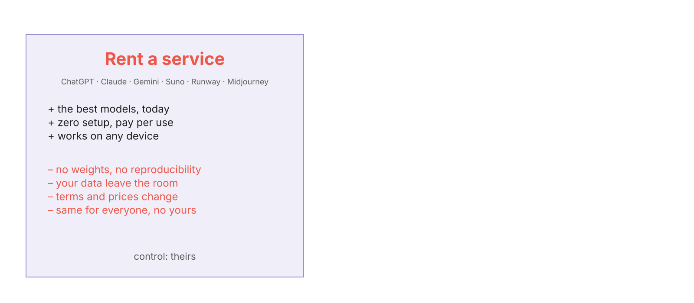
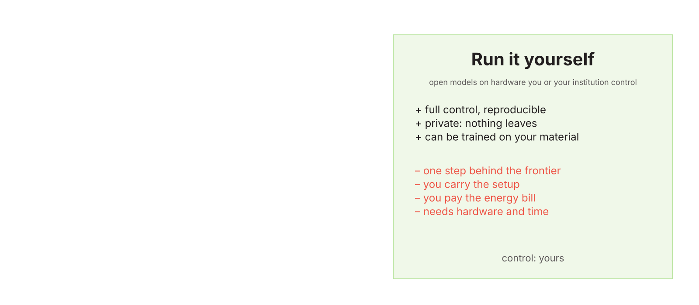
Name and version. "AI" is not an answer.
Your machine, your institution, an EU data centre, the US.
Prompt, files, recordings. Stored? Trained on?
And can you sell a work made with it?
Reproducibility for research; continuity for a repertoire piece.
Per month, per hour of GPU, per kilowatt-hour.
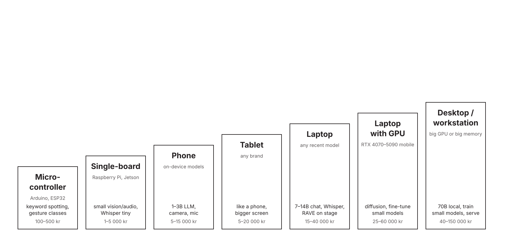
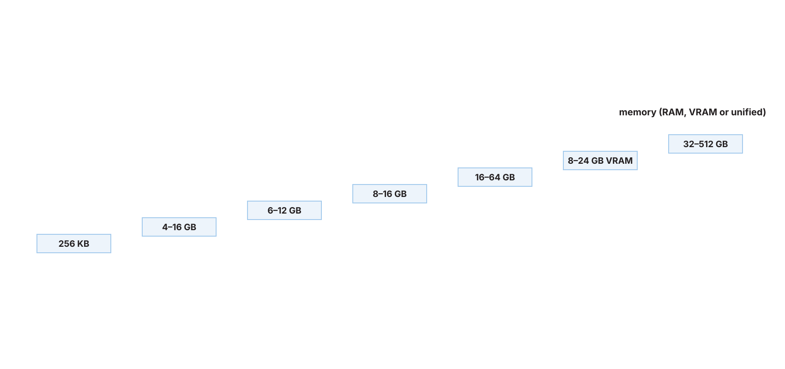
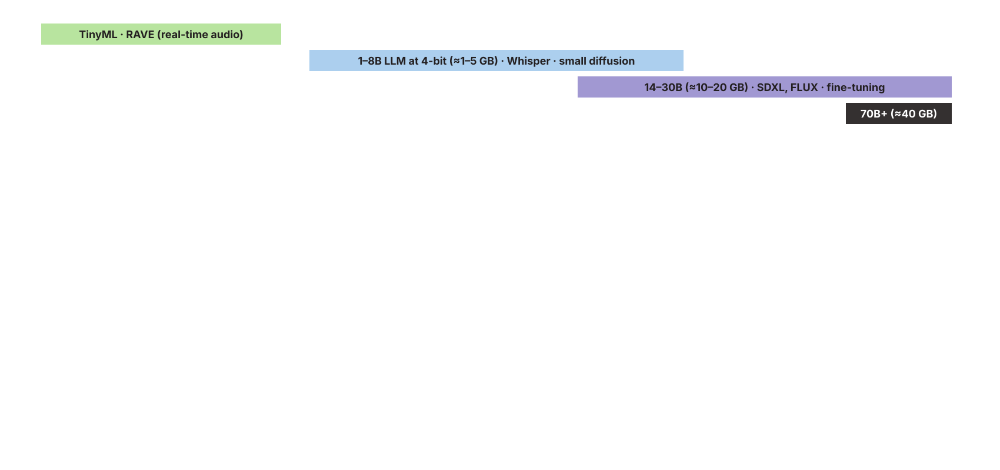
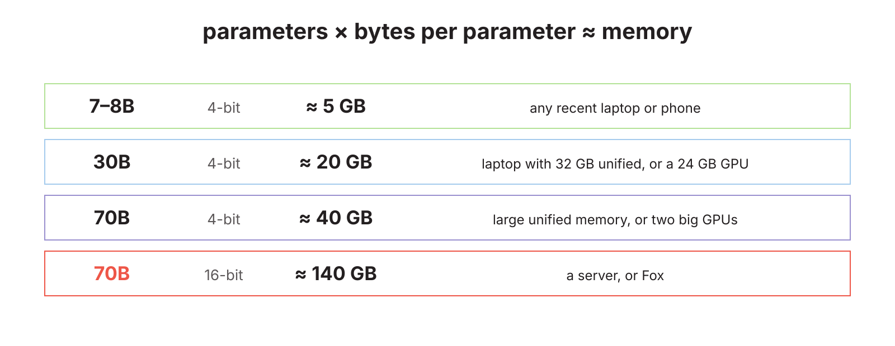
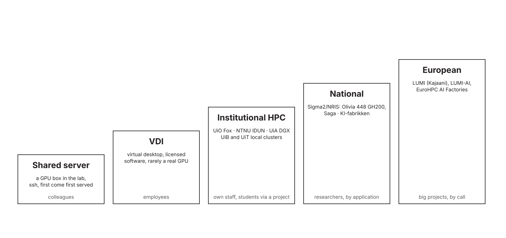
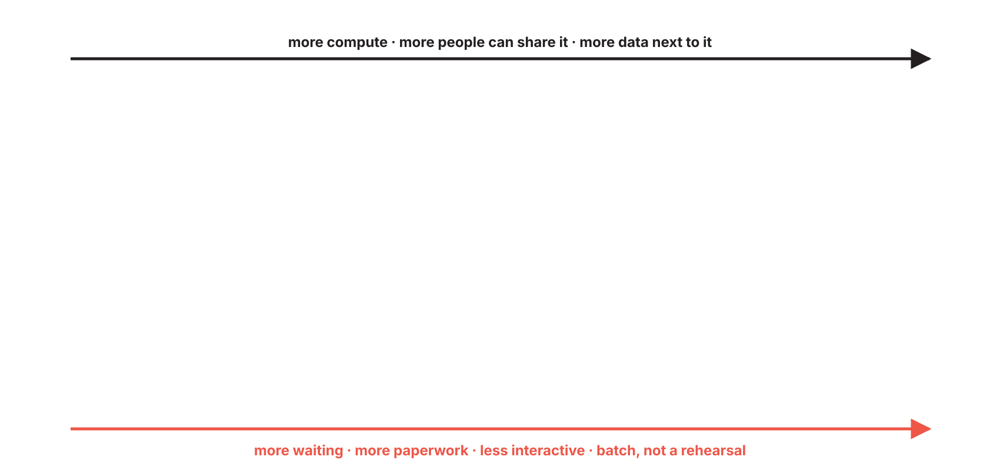
| Institution | Own GPU cluster | Hosted chat / LLM service | Sensitive-data environment | Students get GPUs? | Freelancers / partners get in? |
|---|---|---|---|---|---|
| UiO | Fox | UiO GPT | TSD | via project | via a PI |
| UiB | local HPC (UiB IT) | Copilot | SAFE | ? | ? |
| NTNU | IDUN | GPT NTNU | HUNT Cloud | via supervisor | support agreement needed |
| UiT | local HPC group; hosts NRIS systems | ? | ? | ? | ? |
| UiA | DGX-2 and DGX H100 (CAIR) | ? | ? | ? | ? |
| INN · HiØ · HVL · OsloMet · Nord · Kristiania … | ? | ? | ? | ? | ? |
| NMH · KHiO · AHO | none known | ? | none | no | ? |
| National Library | DH-lab | ? | ? | n/a | ? |
| Simula · SINTEF · IFE | eX3 and own | ? | ? | n/a | ? |
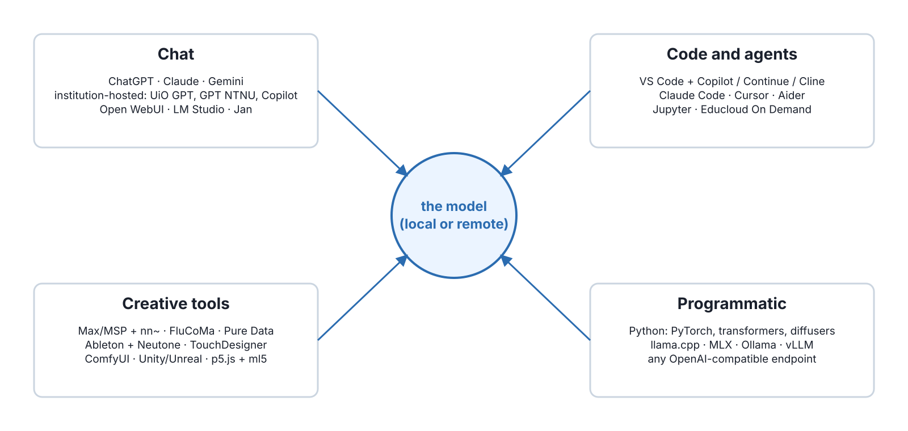
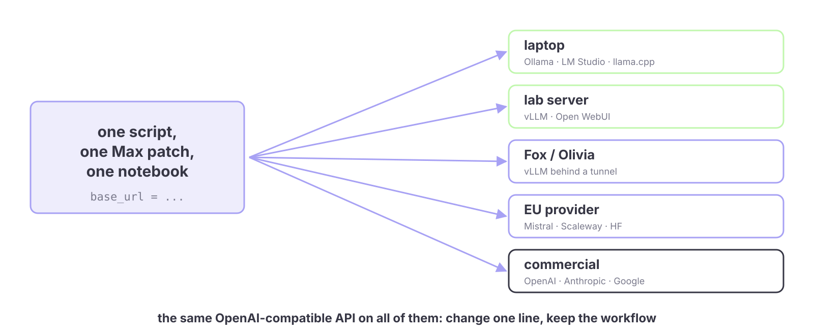
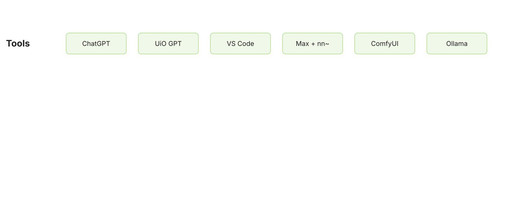
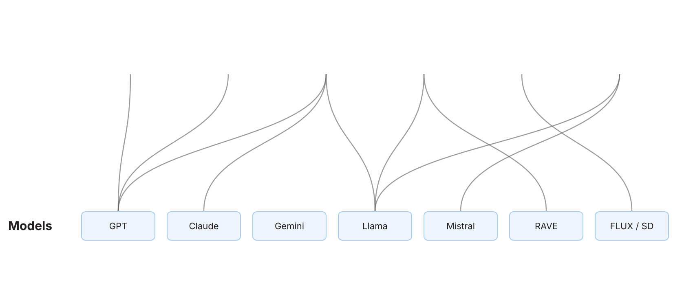
Llama · Mistral · Gemma · Qwen · DeepSeek · Phi
Norwegian: NorMistral (UiO) · NorLLM (NorwAI/NTNU) · NB-GPT
Whisper · faster-whisper · Piper · XTTS · Kokoro
Norwegian: NB-Whisper (National Library)
RAVE (IRCAM) · MusicGen / AudioCraft · Stable Audio Open · ACE-Step · YuE
Norwegian: none
Stable Diffusion · SDXL · FLUX
Norwegian: none
Wan · HunyuanVideo · LTX
Norwegian: none
CLIP · SAM · LLaVA · Qwen-VL · MDM · MotionGPT
Norwegian: none
Apache 2.0 · MIT
Community licences and terms of use
Research only, CC-BY-NC
| Base model licence | Research paper | Commissioned work, sold | Product or service | Release your fine-tune | Mix with a permissive model | Train a new model on its outputs |
|---|---|---|---|---|---|---|
| Apache 2.0 / MITMistral, Qwen3, NorMistral, Whisper, RAVE, FLUX schnell | ● | ● | ● | ● any licence, keep the notice | ● | ● |
| Llama communityLlama 3, Llama 4 | ● | ● "Built with Llama" | ◐ under 700M users | ◐ same licence, name starts with Llama | ◐ the mix inherits Llama terms | ◐ allowed, new model named Llama |
| Gemma terms of useGemma 2, 3 | ● | ● | ◐ prohibited-use policy | ◐ terms passed on | ◐ the mix inherits the terms | ◐ check the terms |
| Stability communitySD3.5, Stable Audio Open | ● | ◐ free under $1M revenue | ◐ same cap, else enterprise licence | ◐ same licence | ◐ the mix inherits the cap | ◐ check the terms |
| OpenRAIL-MSD 1.5, SDXL | ● | ● | ◐ use restrictions apply | ◐ restrictions passed on | ◐ restrictions travel with it | ◐ |
| Non-commercialFLUX.1 dev, MusicGen weights, CC-BY-NC | ● | ◐ read it: outputs sometimes yes, the model no | ○ | ◐ non-commercial only | ○ the whole release becomes non-commercial | ○ usually forbidden |
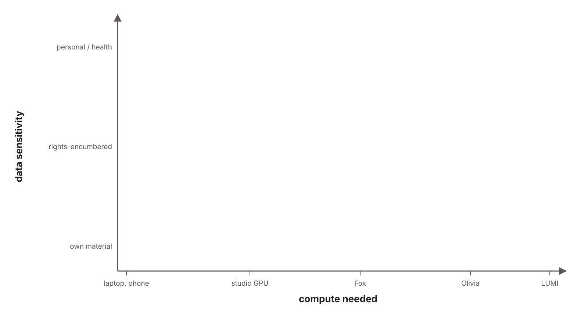
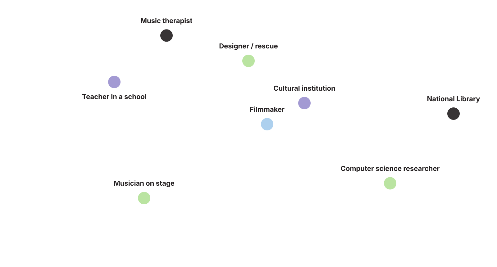
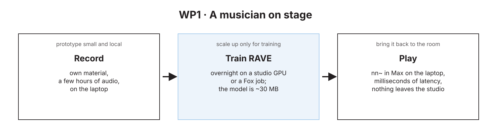
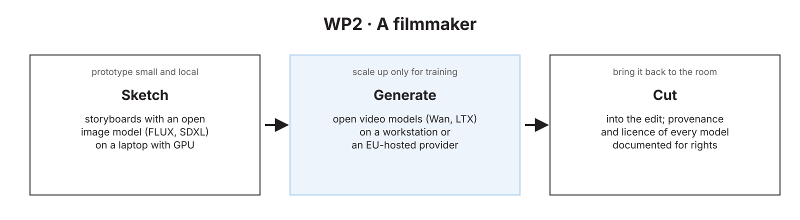
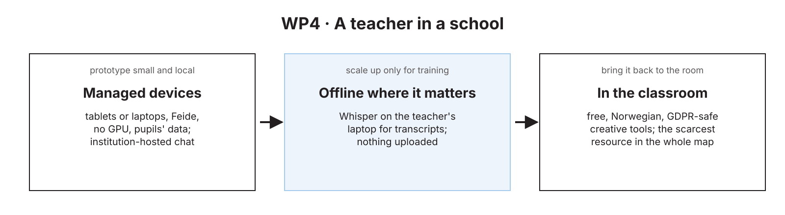
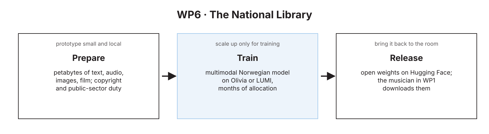
| WP | Typical machine task | Data | Compute | Runs today on | The hole |
|---|---|---|---|---|---|
| 1 Performances | real-time co-creative agents, RAVE, gesture models | own recordings, sensors | ms; laptop, board, one GPU to train | laptop, studio GPU, Fox | open real-time models; training time without paperwork |
| 2 Processes | image, video, text, audio generation | rights-encumbered | hours on a workstation | commercial tools, workstation | rights-clean open models; EU hosting |
| 3 Health | small models on sessions and signals | health, personal | small, inside a secure zone | TSD, offline laptops | GPUs inside secure zones; consent-ready pipelines |
| 4 Education | AI literacy, classroom tools | pupils' data | none locally; hosted | tablets and laptops, Feide, hosted chat | free, Norwegian, GDPR-safe creative tools |
| 5 Industries | production generation, attribution, audits | contracts, identity | hosted, reliable, auditable | commercial APIs | cultural institutions in KI-fabrikken; open-provider contracts |
| 6 Heritage | transcribe, classify, link, train on the collection | petabytes; copyright, public duty | national or European HPC | NB DH-lab, Olivia, LUMI | multimodal Norwegian models; sustained allocations; storage next to compute |
| 7 Problem-solving | constrained generation, embodied systems | industrial, safety-critical | edge to workstation; simulation | partner systems, Fox | constraint-aware models; access for industry partners |
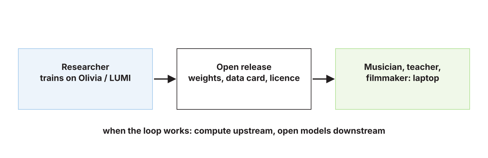
| Task | Commercial API | Laptop | Laptop + GPU | Workstation | Fox-type cluster | Olivia / LUMI |
|---|---|---|---|---|---|---|
| Chat, writing, code | ● | ● 7–14B | ● | ● 70B | ◐ overkill | ◐ overkill |
| Transcription (Whisper) | ● | ● | ● | ● | ◐ batch | ◐ overkill |
| Image generation | ● | ◐ slow | ● | ● | ◐ batch | ◐ overkill |
| Video generation | ● | ○ | ◐ short clips | ● | ◐ batch | ◐ |
| Real-time audio on stage | ○ latency | ● | ● | ● | ○ | ○ |
| Train a small model (RAVE, classifier) | ○ | ◐ slow | ● | ● | ● | ◐ overkill |
| Fine-tune an LLM (7–14B) | ◐ data leave | ○ | ◐ LoRA | ● | ● | ● |
| Train from scratch (NB-scale multimodal) | ○ | ○ | ○ | ○ | ◐ small | ● |
| Sensitive data (health, pupils) | ○ | ● offline | ● offline | ● offline | ◐ TSD-type only | ○ |
| Who | Everyday | Creative work | Training | The catch |
|---|---|---|---|---|
| Musician on stage | laptop, local chat | Max + nn~, RAVE | studio GPU overnight, or a friend with Fox | no institution: no Fox, no NRIS |
| Filmmaker | commercial tools | ComfyUI, open video models on a workstation | LoRA on own footage | rights of the base model |
| Teacher in a school | Feide-gated hosted chat | browser tools only | none | no Norwegian, GDPR-safe creative tool exists |
| Music therapist | offline laptop | small local models | inside TSD, if GPUs | consent and secure-zone capacity |
| Bachelor student | Ollama + Open WebUI | Whisper, notebooks | Colab-type, or a course allocation | depends entirely on the institution |
| PhD / ML researcher | laptop | prototypes locally | Fox, then NRIS, then LUMI | allocation rounds and the paperwork |
| Cultural institution | commercial APIs | hosted open models with a contract | KI-fabrikken, if they qualify | nobody has defined them as a user category |
| Startup / studio | commercial APIs | own GPUs or cloud | KI-fabrikken as "business" | cost, and no research partner |
| National Library | own lab | own models | Olivia, LUMI | sustained multi-year allocation |
| Who | Own hardware | Institutional servers, VDI, Fox-type | National HPC NRIS, Olivia | KI-fabrikken | Hosted open models EU providers | Commercial APIs |
|---|---|---|---|---|---|---|
| Researchers, big universitiesUiO · UiB · NTNU · UiT | yes | yes, varies | by application | yes | own budget | own budget |
| Researchers, other universities and collegesUiA · INN · HiØ · HVL · NMH · KHiO · AHO · Kristiania … | yes | often little or none | by application | yes | own budget | own budget |
| Research institutes | yes | own labs | by application | yes | own budget | own budget |
| Students, bachelor to PhD | own machine | via a supervisor | via a project | ? | rarely | own budget |
| Teachers and schools | tablets, laptops, no GPU | no | no | no | no | Feide-gated, limited |
| Freelance artists | if affordable | no | no | ? | own budget | own budget |
| Public sectormuseums · libraries · NRK · municipalities | yes | own IT, no GPUs | no | "public sector" | budget, procurement | budget, procurement |
| Private sectorstudios · film · games · startups | yes | own | only with a research partner | "business" | budget | yes |